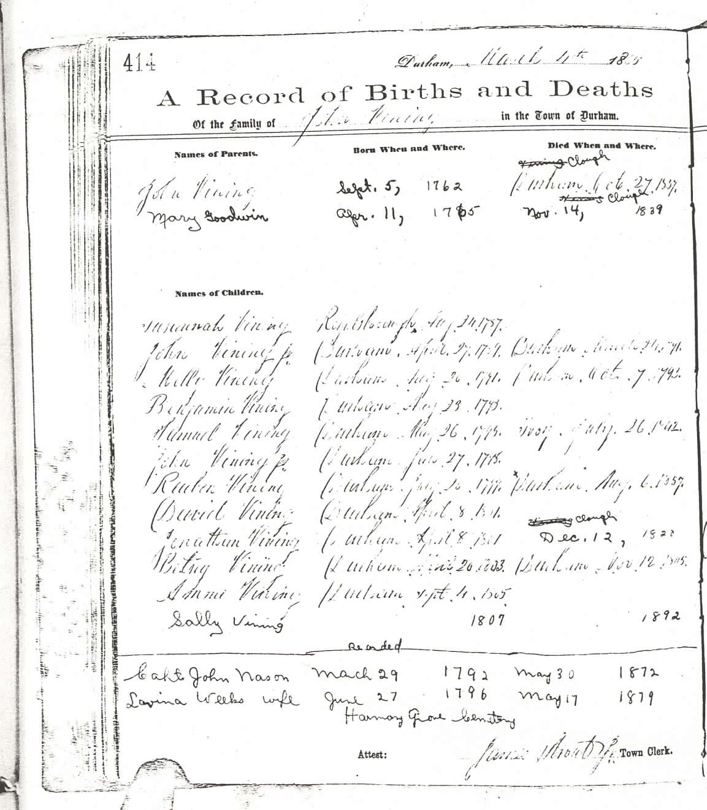
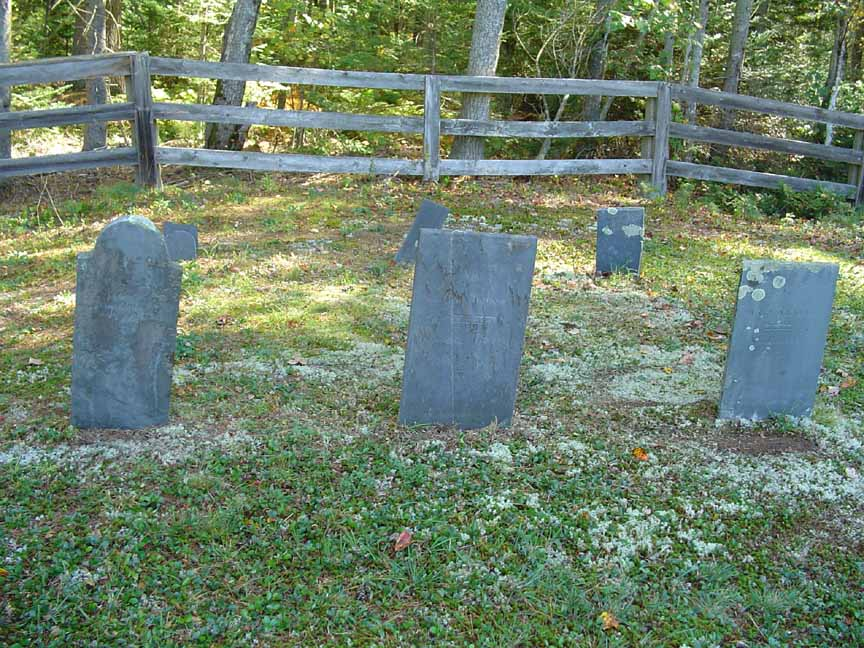
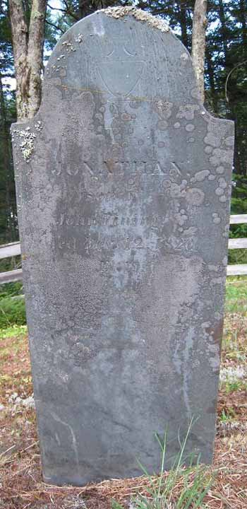
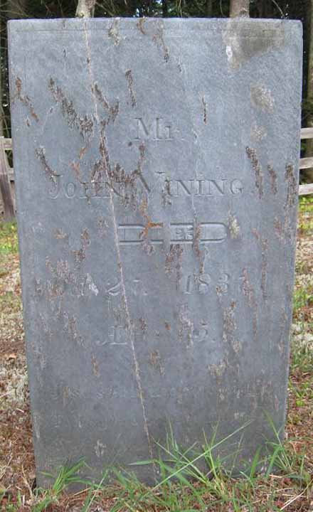
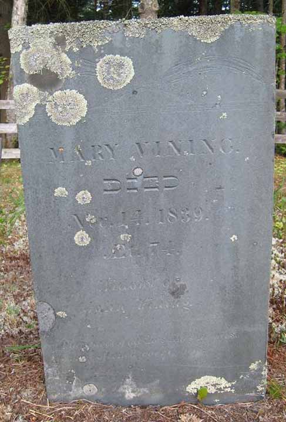
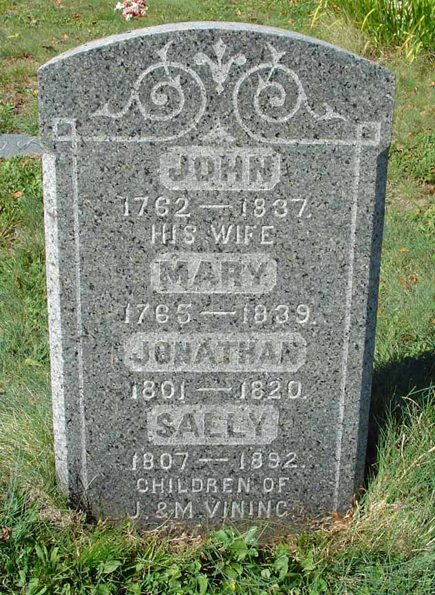
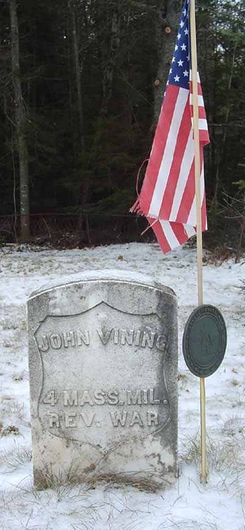
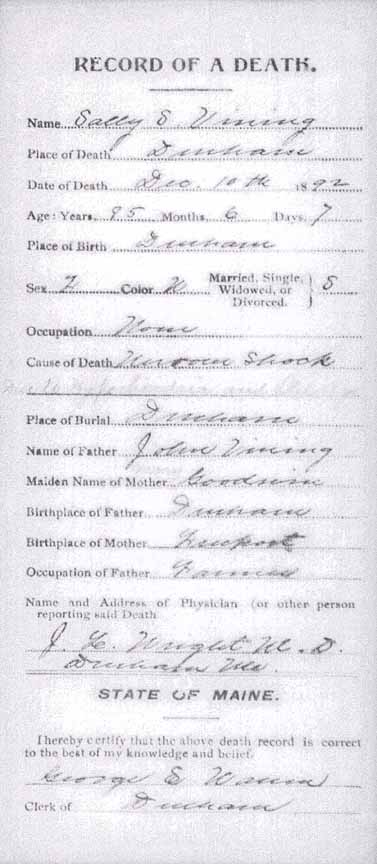

Family Data
The town of Durham, Androscoggin County, Maine, has photocopied its vital record books, and those photocopies are available for public viewing. Unfortunately, much of the photocopied material is very difficult to impossible to read. Below is the page (greatly enlarged) recording the family of John Vining and Mary Goodwin. The information on this page was entered by what appears to be at least two individuals. The earliest (and lightest) entries were made on 4 March 1865 by James Strout Jr., town clerk, and recorded events that occurred from a decade to nearly 80 years earlier. Information near the bottom of the page is for another family but is not excluded in order to show the name of the Town Clerk reported at the very bottom of the page.
Census Data
| 1790 | 1800 | 1810 | 1820 | 1830 | 1840 | 1850 | |
| John Vining | M 16 and upward | M 45 and over | M 45 and over | see note below | ? | dead | |
| Mary (Goodwin) Vining | F | F 45 and over | F 45 and over | see note below | ? | dead | |
| Susannah Vining | F | F 10–16 | F 16–26 | married and living in separate household | |||
| John Vining Jr. | M under 16 | dead | |||||
| Molly Vining | dead | ||||||
| Benjamin Vining | [see note below] | M 10–16 | married and living in separate household | ||||
| Samuel Vining | [see note below] | M 10–16 | see note below | married and living in separate household | |||
| John Vining Jr. | [see note below] | M 10–16 | [see note below] | married and living in separate household | |||
| Reuben Vining | [see note below] | M 10–16 | [see note below] | ? | married and living in separate household | ||
| David Vining | M under 10 | [see note below] | ? | married and living in separate household | |||
| Jonathan Vining | M under 10 | [see note below] | dead | ||||
| Betsey Vining | dead | ||||||
| Ammi Vining | M under 10 | [see note below] | ? | married and living in separate household | |||
| Sally S. Vining | F under 10 | [see note below] | ? | ? | living in household of sister Susannah and her husband, James Newell |


Death Data
John and Mary (Goodwin) Vining's names appear on stones in two cemeteries in Durham, Androscoggin County, Maine. The oldest ones are in Old Town Cemetery and presumably mark the location of their graves. Their son Jonathan has a stone next to those of his parents in Old Town Cemetery. The names of John, Mary, and Jonathan also appear on a stone in Vining Cemetery in Durham that includes the name of John and Mary's daughter (Jonathan's sister) Sally. In addition, there is a Revolutionary War stone for John Vining in Vining Cemetery.





